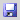

After you have created the product, you can define the content and styles for this product. First you have to open the product. Therefore switch to the "Content" workspace

and select the product from the product listbox in the head-panel of the main window

(if it is not already selected).
Notice that after opening the product, the version listbox shows the value "Latest Draft". When a new product is created, there is automatically an initial version with the default version-identifier "Latest". The product version has initially the state "Draft", i.e. you can edit the content of this version. Furthermore the language listbox is set to the language that you have defined as the original language for this product. We will come back to these listboxes later on.
The "Content" workspace is divided up into following areas (see numbers in screenshot below):
- The product-tree
- The preview-area
- The toolbar

The product-tree shows the hierarchical structure of the complete product documentation. The product-tree always has following root nodes (see numbers in the screenshot below):
- Root section
- Media folder
- Files folder
- System folder

The title of the root section is the product name followed by the version-identifier of the product in square brackets. Therefore in our example the root section has the title "My Product [Latest]". Until now the root section is empty, i.e. it does not have any child-nodes.
The preview-area always displays a preview of the currently selected node in the product-tree. For example, when you select the root section (by clicking the root section tree-node), then the preview-area displays a headline showing the title of the node, i.e. in this case the product name, as shown in the following screenshot.
Normally a section consists not only of the title but also has some content (e.g. sub-sections, paragraphs with text/images, ...). In our example the root-section is still empty (i.e. it does not contain any child-nodes yet). Therefore, only the title of the root section is shown in the preview-area.
You can change the size of the preview-area and product-tree by dragging and dropping the border which separates the two areas. By clicking the arrow at the middle of the border, the preview-area can be increased to the maximum size.
We will now add some content to the root section. First we create a section named "Reference Manual" as child-node of the root section. To do this right-click the root section. This will open following context menu:
Choose the menu item "Add Sub-Node ..." to create a new child-node of the selected node. In the opened dialog you have to choose the node-type that you want to create:
In our example we want to create a new section-node. Therefore select the "Section" entry and click the "Okay" button (alternatively you can double-click the "Section" entry). This opens the node-properties dialog:
As an example we just enter the title "Reference Manual" and click "Okay". The root section has now a child-section with title "Reference Manual":
Now, add another section named "Appendix" by repeating the steps above (i.e. call "Add Sub-Node ..." on the root section, select the node-type "Section" and enter the title "Appendix"). The result should be as follows:
Finally, we add a third section named "Tutorial" as child-node of the root section, but this time the section shall be inserted before the "Reference Manual" section. Therefore select the "Reference Manual" section, open the context menu by right-clicking the node and choose the menu item "Insert before ...". In the following dialogs, select the node-type "Section" and enter the title "Tutorial".
To summarize, the general principle for inserting nodes is as follows: Choose the menu-item "Insert before ...", if you want to insert a node before an existing node (on the same tree-level). Choose the menu-item "Add Sub-Node ...", if you want to append a node as last child of a section or folder node.
Now, that we have created some sections, we can add content to the sections. Right-click the "Tutorial" section and choose "Add Sub-Node ...". In the dialog for choosing the node type, select the type "Content". In the following properties dialog, enter some title, e.g. "My content", or just leave the title empty and click "Okay" (see screenshot below).
If you do not enter a title, the content-node gets the default title "Content". The newly created content-node is now a sub-node of the "Tutorial" section:
As you can see, content-nodes are indicated by the icon, whereas section-nodes are indicated by the

icon. The created content-node is still empty. To edit the content-node, double-click the content-node. This opens the content-editor. Alternatively you can select the content-node and choose "Edit Content" from the context menu.
The content-editor allows you to enter text in a way as it is known from other WYSIWYG word processors. For example, enter the text "This is the first paragraph." and press the Enter-key. Then enter the text "This is the second paragraph", as shown in the following screenshot:
As you can see, pressing the Enter-key creates a new paragraph which is indicated by additional space between the two paragraphs. This is somehow different to many word processors where pressing enter just inserts a hard line-break (a hard line break forces the following text to start on a new line, but it does not create a new paragraph). The space between paragraphs can be configured in the output-configuration which we will have a look at later. In Docmenta you can insert a hard line-break by pressing the key combination Shift+Enter.
It is possible to indent a paragraph by placing the cursor within the paragraph and pressing the indent (

) button. In the following screenshot the second paragraph is indented.
The indention space can be set in the output-configuration. You can undo the indention by pressing the outdent () button.
Beside entering text, you can also apply styles to selected text. Docmenta has following predefined inline-styles:
You can apply an inline-style to some text, by selecting the text and then clicking one of the inline-style buttons. Add some strong and underlined text as shown in the screenshot below:
Please note, that as long as you have opened the content-editor, the content-node is locked, i.e. other users cannot edit this node at the same time. Locked content-nodes are indicated by a red coloured content-icon ().
After you have finished editing the content, you can save the content by one of the following three methods:
- Click "Save and Close" in the bottom-bar of the content-editor. This saves the content and closes the content-editor.
- Click "Save" in the bottom-bar of the content-editor. This saves the content but keeps the content-editor open.
- Click the "Save" () button in the tool-bar. This is identical to 2.
If you want to close the dialog without saving any changes, then click the "Cancel" button.
After saving the content, the preview-area is automatically refreshed. You may notice, that when you move the mouse pointer over the content in the preview-area then the borders of the content-node are marked with dashed border-lines, as shown in the following screenshot:
You can easily open the content-editor by double-clicking the content within the marked area. Beside double clicking a tree node and choosing "Edit content" from the context menu, this is the third method of opening the content-editor. Use whichever method you prefer.